Longitudinal Data Analysis
Case study of Trenal.XLS
3/31/23
Data description
Background
The dataset
Trenal.XLScontains information on patients who received renal graft(kidney transplant). The patients have been followed for at most 10 years.People with end-stage kidney disease who receive a kidney transplant generally live longer than people with ESRD who are on dialysis.
However, kidney transplant recipients must remain on immunosuppressants (medications to suppress the immune system) for the rest of their life to prevent their body from rejecting the new kidney. The long-term immunosuppression puts them at risk for infections and cancer.
Haematocrit level is meassured for each patient who has received renal graft to see if gender, the age to go through the operation, reject or not, cardio history or not will influence the healthy state of a patient after operation.
Data organisation
| Variables | Physical Meaning | Types of the variable |
|---|---|---|
| id | Identification Number of each subject | Categorical, ordinal \(1,2,3,\cdots,1160\) |
| Hc | Haematocrit level (the percentage of red blood cells in the body) | Continuous units in \(\%\) |
| Hc0, Hc06, Hc1, Hc2,\(\cdots\), Hc10 | Haematocrit level meassured at the moment of time \({0,0.5,1,2,\cdots,10}\) years after the kidney transplant | Continuous; units in \(\%\) |
| age | Age of the patient when performing the kidney transplant | Continuous; from \(15\) to \(76\) years old, average is \(46.43\) years old |
| male | Gender | Binary: 0 = female ; 1 = male |
| reject | Has the patient shown symptoms of graft rejection during the first three months after the transportation | Binary: 0 = no 1 = yes |
| cardio | Has the patient experienced a cardio-vascular problem during the years preceding the transplantation | Binary: 0 = no 1 = yes |
Observations
Our given data set is Longitudinal data with two levels: time-level and subject-level
+Time-level (also called Level One) variables: changed with time, indexed by \(j\) e.g. time and response Hc +Subject-level* (also called Level Two) variables: changed with subjects indexed by \(i\) e.g. age, male, reject, cardio
Missing data distribution
| HC0 | HC06 | HC1 | HC2 | HC3 | HC4 | HC5 | HC6 | HC7 | HC8 | HC9 | HC10 | |
|---|---|---|---|---|---|---|---|---|---|---|---|---|
| Hc.NA | 1.000 | 0 | 1.000 | 87.000 | 205.000 | 314.000 | 418.00 | 508.000 | 595.000 | 672.000 | 749.000 | 812.0 |
| Hc.NA.percentage | 0.001 | 0 | 0.001 | 0.075 | 0.177 | 0.271 | 0.36 | 0.438 | 0.513 | 0.579 | 0.646 | 0.7 |
Missing data distribution
- First we extract a data with the Hc level is missing (shown as NA) as a new data frame
trenal.long.NA.unique - Then We plot the histogram of all the predictors: age, male, cardio and reject (the 4 columns corresponding to the right figure).on both the original data set
trenal.long.uniqueand the missing data frametrenal.long.NA.unique - We may conclude that missing data are random and has no specific preference on any type of the person.
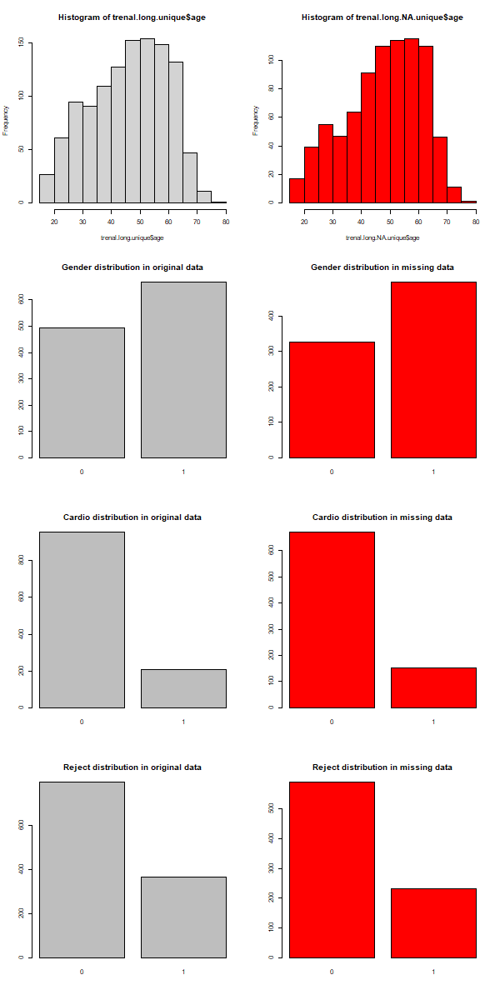
Exploratory Data analysis
Mean Structure

Variance Structure
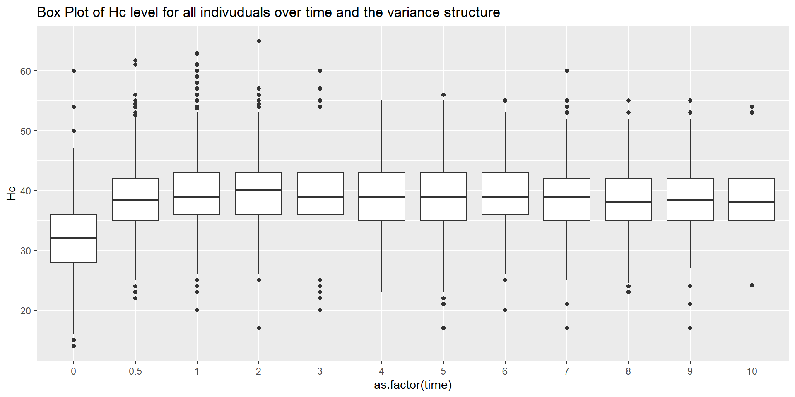Covariance Structure

Find out which covariate might influence the responses time trend
Spaghetti plot
Spaghetti plot group by id
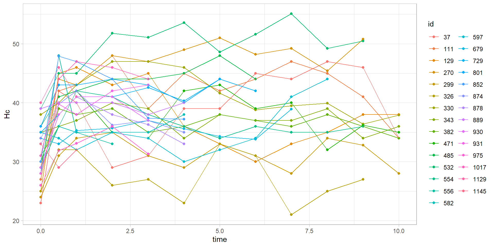
Spaghetti plot group by male
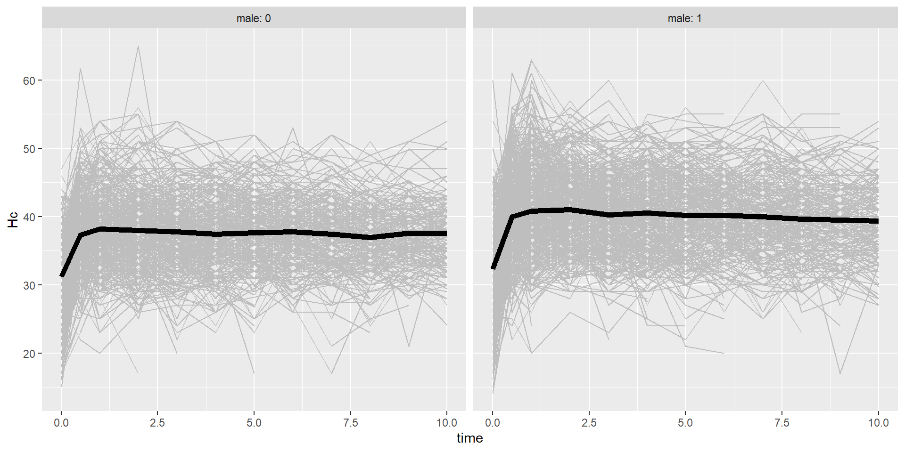
Spaghetti plot group by cardio
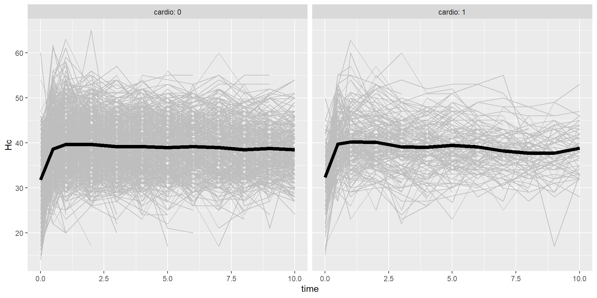
Spaghetti plot group by reject
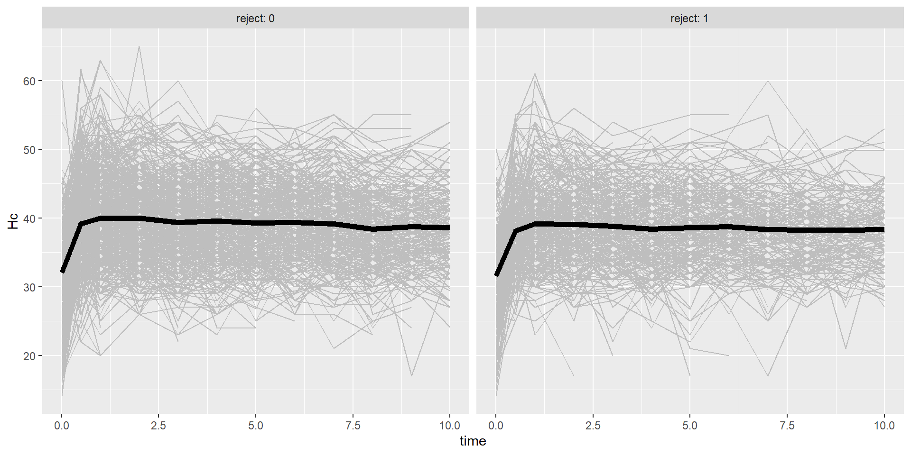
Boxplot
Box plot by male
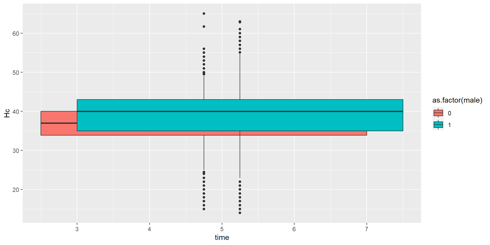
Box plot by cardio
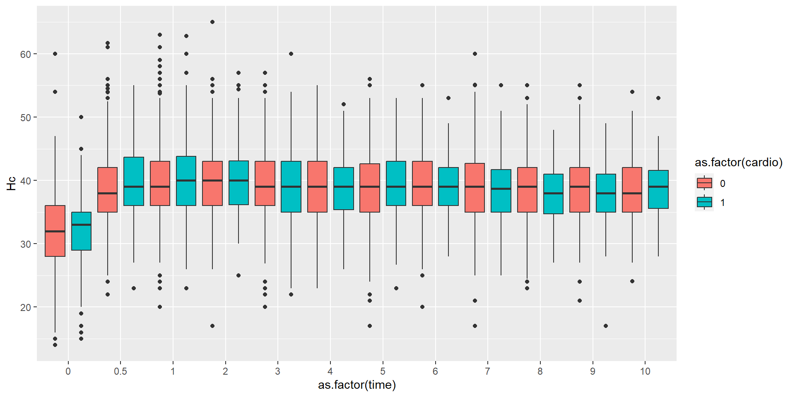
Box plot by reject
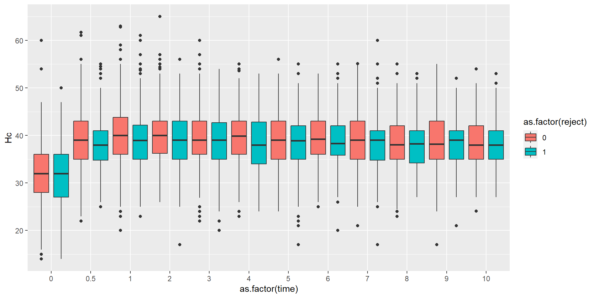
Data set analysis to see the age effect
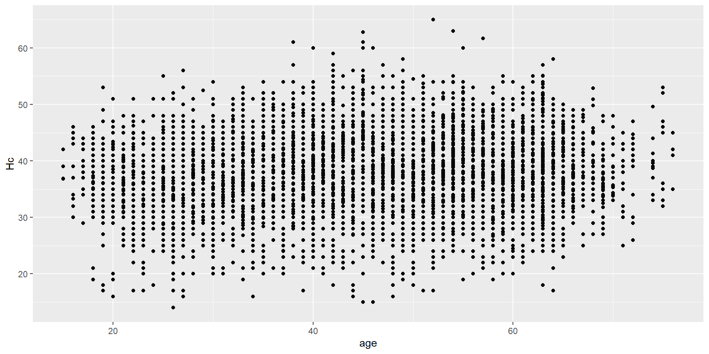
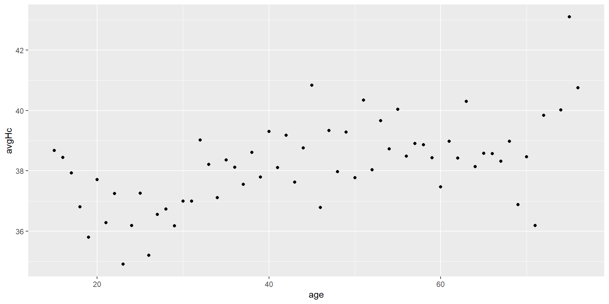
Conclusions after exploring data analysis
- The Hc time trend tends to increase first from 0 to 0.5 year then keep variated during the rest of the meassurements
- The subject related variables age may increase the mean Hc level of a subject
- Male has relative higher Hc level than female
- Cardio or reject play no big difference in the Hc level measurements.
Data analysis
Multivariate Data Analysis using lm
lm0 <- lm(Hc ~ time, trenal.long)
lm1 <- lm(Hc ~ time + age, trenal.long)
lm2 <- lm(Hc ~ time + age + male,trenal.long)
lm3 <- lm(Hc ~ time + age + male + reject,trenal.long)
lm4 <- lm(Hc ~ time + age + male + reject + cardio,trenal.long)
anova(lm1,lm2,lm3,lm4)Analysis of Variance Table
Model 1: Hc ~ time + age
Model 2: Hc ~ time + age + male
Model 3: Hc ~ time + age + male + reject
Model 4: Hc ~ time + age + male + reject + cardio
Res.Df RSS Df Sum of Sq F Pr(>F)
1 9548 340135
2 9547 325933 1 14201.6 416.4704 < 2.2e-16 ***
3 9546 325700 1 233.3 6.8405 0.008925 **
4 9545 325483 1 216.8 6.3564 0.011712 *
---
Signif. codes: 0 '***' 0.001 '**' 0.01 '*' 0.05 '.' 0.1 ' ' 1Two stage model analysis
Linear Mixed Effects Model Analysis using lmer
Conduct the analysis level by level
inspired by Chapter 8 and 9 of https://bookdown.org/roback/bookdown-BeyondMLR/ch-lon.html
Level One : time and the response variable e.g. Hc level
Level Two : covariates related to each subject, e.g. age, male, reject, cardioThe trials related to Level One (only time as covariate)
model.a <- lmer(Hc ~ 1 + (1|id),REML=T,data=trenal.long)
model.b <- lmer(Hc ~ time + (time|id),REML=T,data= trenal.long)
model.c <- lmer(Hc ~ timec + I(timec^2) + (timec + I(timec^2)|id),REML=T, data=trenal.long.center)
model.b.piecewise <- lmer(Hc ~ time1 + time2 + (time2|id),REML=T,data=trenal.long.piecewise)The trials related to level Two (Add subject related variable)
Unconditional Means Model
— to discover variance distribution
We can first try the unconditional Means Model to explore the variance( within subject and between-subject), Define \(Y_{ij}\) as the Hc level from subject \(i\) and measured time \(j\)
Level One: \[Y_{ij} = a_i + \epsilon_{ij},\] where \(\epsilon_{ij} \sim N(0,\sigma^2)\) Level Two: \[a_i = \alpha_0 + u_i,\] where \(u_i \sim N(0,\sigma_{u}^2)\)
Written in linear mixed effect model is: \[Y_{ij} = \alpha_0 + u_i + \epsilon_{ij},\] where \(u_i \sim N(0,\sigma_u^2)\) and \(\epsilon_{ij} \sim N(0,\sigma^2)\)
Linear mixed model fit by REML ['lmerMod']
Formula: Hc ~ 1 + (1 | id)
Data: trenal.long
REML criterion at convergence: 59106.7
Scaled residuals:
Min 1Q Median 3Q Max
-5.6999 -0.4371 0.1060 0.5631 6.1641
Random effects:
Groups Name Variance Std.Dev.
id (Intercept) 13.60 3.688
Residual 23.07 4.803
Number of obs: 9558, groups: id, 1160
Fixed effects:
Estimate Std. Error t value
(Intercept) 38.1630 0.1206 316.4From the output of model.a, we obtain estimates of three model parameters:
- \(\hat{\alpha}_0 = 38.16\): the mean of Hc level \(\mu_{Hc}\) across all subjects and all years
- \(\hat{\sigma}^2 = 23.07\): the variance in within-subjects deviation, between years of measurements \(Hc_j\) and the mean \(\mu_{Hc}\) across all subjects and all years
- \(\hat{\sigma_u}^2 = 13.60\): the variance in between-subjects deviation, between subject mean \(\mu_{Hc_i}\) and the overall mean \(\mu_{Hc}\) across all subjects and all years.
The intraclass correlation coefficient: \[\hat{\rho}= \frac{\hat{\sigma_u}^2}{\hat{\sigma_u}^2+\hat{\sigma}^2} = \frac{13.60}{13.60+ 23.07}=0.371\]
Unconditional Growth Model
— introducing time in Level One
Level One: \[Y_{ij} = a_i + b_i \times time_{ij} + \epsilon_{ij},\] where \(\epsilon_{ij} \sim N(0,\sigma^2)\)
Level Two: \[\begin{align} a_i &= \alpha_0 + u_i, \\ b_i &= \beta_0 + v_i \end{align}\] where \(\begin{bmatrix} u_i \\ v_i \end{bmatrix} \sim N\left(\begin{bmatrix} 0 \\ 0 \end{bmatrix}, \begin{bmatrix}\sigma_{u}^2 & \rho_{uv}\sigma_u\sigma_v \\ \rho_{uv} \sigma_u\sigma_v & \sigma_v^2 \end{bmatrix}\right)\)
Written in linear mixed effect model is: \[Y_{ij} = [\alpha_0 + \beta_0 \times time_{ij}] + [ u_i + v_i \times time_{ij} + \epsilon_{ij} ],\] where \(\begin{bmatrix} u_i \\ v_i \end{bmatrix} \sim N\left(\begin{bmatrix} 0 \\ 0 \end{bmatrix}, \begin{bmatrix}\sigma_{u}^2 & \rho_{uv}\sigma_u\sigma_v \\ \rho_{uv} \sigma_u\sigma_v & \sigma_v^2 \end{bmatrix}\right)\) and \(\epsilon_{ij} \sim N(0,\sigma^2)\)
Linear mixed model fit by REML ['lmerMod']
Formula: Hc ~ time + (time | id)
Data: trenal.long
REML criterion at convergence: 58690.4
Scaled residuals:
Min 1Q Median 3Q Max
-5.2501 -0.4524 0.0685 0.5468 6.4063
Random effects:
Groups Name Variance Std.Dev. Corr
id (Intercept) 13.5731 3.6842
time 0.1856 0.4308 -0.15
Residual 20.8883 4.5704
Number of obs: 9558, groups: id, 1160
Fixed effects:
Estimate Std. Error t value
(Intercept) 37.26780 0.13057 285.4
time 0.31583 0.02375 13.3
Correlation of Fixed Effects:
(Intr)
time -0.394From the model.b, we obtain estimates of our six model parameters:
- \(\hat{\alpha}_0 = 37.2678\): the mean Hc level for the subjects at time 0, \(Hc_0\)
- \(\hat{\beta}_0 = 0.31583\): the mean change in successively measurements during totally \(12\) measurements
- \(\hat{\sigma}^2 = 20.8883\): the variance in within-subject deviations
- \(\hat{\sigma}_u^2 = 13.5731\): the variance between subjects at time 0, \(Hc_0\)
- \(\hat{\sigma}_v^2 = 0.1856\): the variance between subjects in rate of changes in Hc level
- \(\rho_{uv} = -0.15\): the correlation in subject’s \(Hc_0\) and the rate of change in Hc level
The estimated within-subject variance \(\hat{\sigma}^2\) decreased by about \(9\%\) from the unconditional means model implying that \(9\%\) of within-subject variability in Hc level can be explained by a linear increase over time: \[Pseudo R^2_{L1} = \frac{\hat{\sigma}^2(uncond. means)-\hat{\sigma}^2(uncond. growth)}{\hat{\sigma}^2(uncond. growth)} = \frac{23.07-20.8883}{23.07} = 0.0948\]
Quadratic time trend modeling
Level One: \[Y_{ij} = a_i + b_i \times time_{ij} + c_i \times time_{ij}^2 + \epsilon_{ij},\] where \(\epsilon_{ij} \sim N(0,\sigma^2)\)
Level Two: \[\begin{align} a_i &= \alpha_0 + u_i, \\ b_i &= \beta_0 + v_i, \\ c_i &= \gamma_0 + w_i, \end{align}\] where \(\begin{bmatrix} u_i \\ v_i \\w_i \end{bmatrix} \sim N\left(\begin{bmatrix} 0 \\ 0 \\0 \end{bmatrix}, \begin{bmatrix}\sigma_{u}^2 & \rho_{uv}\sigma_u\sigma_v & \rho_{uw} \sigma_u \sigma_w \\ & \sigma_v^2 & \rho_{vw} \sigma_v\sigma_w \\ & & \sigma_w^2 \end{bmatrix}\right)\)
Written in linear mixed effect model is: \[Y_{ij} = [\alpha_0 + \beta_0 \times time_{ij} + \gamma_0 \times time_{ij}^2] + [ u_i + v_i \times time_{ij} + w_i \times time_{ij}^2 + \epsilon_{ij} ],\] where \(\begin{bmatrix} u_i \\ v_i \\w_i \end{bmatrix} \sim N\left(\begin{bmatrix} 0 \\ 0 \\0 \end{bmatrix}, \begin{bmatrix}\sigma_{u}^2 & \rho_{uv}\sigma_u\sigma_v & \rho_{uw} \sigma_u \sigma_w \\ & \sigma_v^2 & \rho_{vw} \sigma_v\sigma_w \\ & & \sigma_w^2 \end{bmatrix}\right)\) and \(\epsilon_{ij} \sim N(0,\sigma^2)\)
Linear mixed model fit by REML ['lmerMod']
Formula: Hc ~ timec + I(timec^2) + (timec + I(timec^2) | id)
Data: trenal.long.center
REML criterion at convergence: 57865.5
Scaled residuals:
Min 1Q Median 3Q Max
-4.7256 -0.4767 0.0361 0.5308 6.7119
Random effects:
Groups Name Variance Std.Dev. Corr
id (Intercept) 21.436916 4.63000
timec 0.197651 0.44458 0.27
I(timec^2) 0.007685 0.08767 -0.82 -0.44
Residual 18.231536 4.26984
Number of obs: 9558, groups: id, 1160
Fixed effects:
Estimate Std. Error t value
(Intercept) 40.201415 0.162783 246.963
timec 0.055012 0.024108 2.282
I(timec^2) -0.161860 0.006341 -25.526
Correlation of Fixed Effects:
(Intr) timec
timec 0.244
I(timec^2) -0.590 0.198
optimizer (nloptwrap) convergence code: 0 (OK)
Model failed to converge with max|grad| = 0.0353379 (tol = 0.002, component 1)
Model is nearly unidentifiable: very large eigenvalue
- Rescale variables?Piecewise linear time trend
In the piecewise linear model, the complete time span of the study is divided into two segments, with a separate slope relating time to the response in each segment.
Level One: \[Y_{ij} = a_i + b_i \times time_{1_{ij}} + c_i \times time_{2_{ij}} + \epsilon_{ij},\] where \(\epsilon_{ij} \sim N(0,\sigma^2)\)
- Level Two:
\[\begin{align} a_i &= \alpha_0 + u_i, \\ b_i &= \beta_0 + v_i, \\ c_i &= \gamma_0 + w_i, \end{align}\] where \(\begin{bmatrix} u_i \\ v_i \\w_i \end{bmatrix} \sim N\left(\begin{bmatrix} 0 \\ 0 \\0 \end{bmatrix}, \begin{bmatrix}\sigma_{u}^2 & \rho_{uv}\sigma_u\sigma_v & \rho_{uw} \sigma_u \sigma_w \\ & \sigma_v^2 & \rho_{vw} \sigma_v\sigma_w \\ & & \sigma_w^2 \end{bmatrix}\right)\)
Written in linear mixed effect model is: \[Y_{ij} = [\alpha_0 + \beta_0 \times time_{1_{ij}} + \gamma_0 \times time_{2_{ij}}] + [ u_i + v_i \times time_{1_{ij}} + w_i \times time_{2_{ij}} + \epsilon_{ij} ],\] where \(\begin{bmatrix} u_i \\ v_i \\w_i \end{bmatrix} \sim N\left(\begin{bmatrix} 0 \\ 0 \\0 \end{bmatrix}, \begin{bmatrix}\sigma_{u}^2 & \rho_{uv}\sigma_u\sigma_v & \rho_{uw} \sigma_u \sigma_w \\ & \sigma_v^2 & \rho_{vw} \sigma_v\sigma_w \\ & & \sigma_w^2 \end{bmatrix}\right)\) and \(\epsilon_{ij} \sim N(0,\sigma^2)\)
In our case study, we can fit separate slope in time \(0-0.5\) and \(0.5-10\)
Linear mixed model fit by REML ['lmerMod']
Formula: Hc ~ time1 + time2 + (time2 | id)
Data: trenal.long.piecewise
REML criterion at convergence: 58545.9
Scaled residuals:
Min 1Q Median 3Q Max
-5.1940 -0.4729 0.0625 0.5607 6.5532
Random effects:
Groups Name Variance Std.Dev. Corr
id (Intercept) 13.6532 3.6950
time2 0.1867 0.4321 -0.15
Residual 20.4690 4.5243
Number of obs: 9558, groups: id, 1160
Fixed effects:
Estimate Std. Error t value
(Intercept) 36.76665 0.13678 268.79
time1 4.12291 0.31360 13.15
time2 0.40031 0.02467 16.22
Correlation of Fixed Effects:
(Intr) time1
time1 -0.324
time2 -0.439 0.330Comparing the level one models
Comparing the AIC/ BIC value
model.a <- lmer(Hc ~ 1 + (1|id),REML=T,data=trenal.long)
model.b <- lmer(Hc ~ time + (time|id),REML=T,data= trenal.long)
model.c <- lmer(Hc ~ timec + I(timec^2) + (timec + I(timec^2)|id),REML=T, data=trenal.long.center)
model.b.piecewise <- lmer(Hc ~ time1 + time2 + (time2|id),REML=T,data=trenal.long.piecewise)model.a: AIC = 59112.68 ;BIC = 59134.18 model.b: AIC = 58702.37 ;BIC = 58745.36 model.c: AIC = 57885.46 ;BIC = 57957.11 model.b.piecewise: AIC = 58559.93 ;BIC = 58610.09 model.c has the lowest AIC BIC value. But we keep the linear time trend with piecewise time intervals, considering that in real case the Hc level (the percentage of red blood cells in the body) will be affected more by health status than the age of a person.
Besides, the quadratic model seems not really identifiable
Linear mixed model fit by REML ['lmerMod']
Formula: Hc ~ timec + I(timec^2) + (timec + I(timec^2) | id)
Data: trenal.long.center
REML criterion at convergence: 57865.5
Scaled residuals:
Min 1Q Median 3Q Max
-4.7256 -0.4767 0.0361 0.5308 6.7119
Random effects:
Groups Name Variance Std.Dev. Corr
id (Intercept) 21.436916 4.63000
timec 0.197651 0.44458 0.27
I(timec^2) 0.007685 0.08767 -0.82 -0.44
Residual 18.231536 4.26984
Number of obs: 9558, groups: id, 1160
Fixed effects:
Estimate Std. Error t value
(Intercept) 40.201415 0.162783 246.963
timec 0.055012 0.024108 2.282
I(timec^2) -0.161860 0.006341 -25.526
Correlation of Fixed Effects:
(Intr) timec
timec 0.244
I(timec^2) -0.590 0.198
optimizer (nloptwrap) convergence code: 0 (OK)
Model failed to converge with max|grad| = 0.0353379 (tol = 0.002, component 1)
Model is nearly unidentifiable: very large eigenvalue
- Rescale variables?Linear mixed model fit by REML ['lmerMod']
Formula: Hc ~ time1 + time2 + (time2 | id)
Data: trenal.long.piecewise
REML criterion at convergence: 58545.9
Scaled residuals:
Min 1Q Median 3Q Max
-5.1940 -0.4729 0.0625 0.5607 6.5532
Random effects:
Groups Name Variance Std.Dev. Corr
id (Intercept) 13.6532 3.6950
time2 0.1867 0.4321 -0.15
Residual 20.4690 4.5243
Number of obs: 9558, groups: id, 1160
Fixed effects:
Estimate Std. Error t value
(Intercept) 36.76665 0.13678 268.79
time1 4.12291 0.31360 13.15
time2 0.40031 0.02467 16.22
Correlation of Fixed Effects:
(Intr) time1
time1 -0.324
time2 -0.439 0.330Adding subject related variable in level two
Based on the model.b
model.b.age <- lmer(Hc ~ time + age + (time|id),REML=T,data=trenal.long.scaled)
model.b.male <- lmer(Hc ~ time + male + (time|id),REML=T,data=trenal.long.scaled)
model.b.agemale <- lmer(Hc ~ time +male + age +(time|id),REML=T,data=trenal.long.scaled)
model.b.agemalereject <- lmer(Hc ~ time +age + male+ reject +(time|id),REML=T,data=trenal.long.scaled)model.b: AIC = 58702.37 ;BIC = 58745.36 model.b.age: AIC = 58625.59 ;BIC = 58675.74 model.b.male: AIC = 58606.56 ;BIC = 58656.71 model.b.agemale: AIC = 58527.24 ;BIC = 58584.55 model.b.agemalereject: AIC = 58527.94 ;BIC = 58592.42 Final chosen model
Our chosen model would be the linear model with age gender as the level two variables model.b.agemale.
Linear mixed model fit by REML ['lmerMod']
Formula: Hc ~ time + male + age + (time | id)
Data: trenal.long.scaled
REML criterion at convergence: 58511.2
Scaled residuals:
Min 1Q Median 3Q Max
-5.2238 -0.4568 0.0729 0.5568 6.4306
Random effects:
Groups Name Variance Std.Dev. Corr
id (Intercept) 11.9573 3.4579
time 0.1864 0.4317 -0.21
Residual 20.8875 4.5703
Number of obs: 9551, groups: id, 1159
Fixed effects:
Estimate Std. Error t value
(Intercept) 33.195249 0.433448 76.584
time 0.322553 0.023698 13.611
male1 2.350432 0.227837 10.316
age 0.058657 0.008504 6.897
Correlation of Fixed Effects:
(Intr) time male1
time -0.162
male1 -0.292 0.011
age -0.909 0.037 -0.011
optimizer (nloptwrap) convergence code: 0 (OK)
Model failed to converge with max|grad| = 0.00413353 (tol = 0.002, component 1)Adding subject related variable in level two
Based on the model.b.piecewise
model.b.piecewise.age <- lmer(Hc ~ time1 + time2 + age + (time2|id),REML=T,data=trenal.long.piecewise)
model.b.piecewise.male <- lmer(Hc ~ time1 + time2 + male + (time2|id),REML=T,data=trenal.long.piecewise)
model.b.piecewise.agemale <- lmer(Hc ~ time1 + time2 +male + age +(time2|id),REML=T,data=trenal.long.piecewise)
model.b.piecewise.agemalereject <- lmer(Hc ~ time1 + time2 +age + male+ reject +(time2|id),REML=T,data=trenal.long.piecewise)model.b.piecewise: AIC = 58559.93 ;BIC = 58610.09 model.b.piecewise.age: AIC = 58483.85 ;BIC = 58541.16 model.b.piecewise.male: AIC = 58464.65 ;BIC = 58521.97 model.b.piecewise.agemale: AIC = 58386 ;BIC = 58450.48 model.b.piecewise.agemalereject: AIC = 58386.74 ;BIC = 58458.38 Final chosen model
Our chosen model would be the piecewise linear model with age gender as the level two variables model.b.piecewise.agemale.
Linear mixed model fit by REML ['lmerMod']
Formula: Hc ~ time1 + time2 + male + age + (time2 | id)
Data: trenal.long.piecewise
REML criterion at convergence: 58368
Scaled residuals:
Min 1Q Median 3Q Max
-5.1683 -0.4680 0.0637 0.5619 6.5758
Random effects:
Groups Name Variance Std.Dev. Corr
id (Intercept) 12.0382 3.4696
time2 0.1874 0.4329 -0.21
Residual 20.4704 4.5244
Number of obs: 9551, groups: id, 1159
Fixed effects:
Estimate Std. Error t value
(Intercept) 32.694557 0.435712 75.037
time1 4.112153 0.313713 13.108
time2 0.406601 0.024616 16.518
male1 2.346642 0.228052 10.290
age 0.058747 0.008512 6.902
Correlation of Fixed Effects:
(Intr) time1 time2 male1
time1 -0.104
time2 -0.180 0.331
male1 -0.290 -0.001 0.011
age -0.905 0.003 0.035 -0.011
optimizer (nloptwrap) convergence code: 0 (OK)
Model failed to converge with max|grad| = 0.00794242 (tol = 0.002, component 1)\[Y_{ij} = [32.69 + 4.112\times time_{1_{ij}} +0.4066 \times time_{2_{ij}} + 2.347 \times male_i + 0.058747 \times age_i] + [u_i + v_i \times time_{2_{ij}}+ \epsilon_{ij} \] where \(\begin{bmatrix} u_i \\ v_i \end{bmatrix} \sim N\left(\begin{bmatrix} 0 \\ 0 \end{bmatrix}, \begin{bmatrix}12.038 & -0.3155271 \\ -0.3155271 & 0.1874\end{bmatrix}\right)\),and \(\epsilon_{ij} \sim N(0,20.47)\)
Two Stage Model Analysis comparison
Two stage Model
Stage one
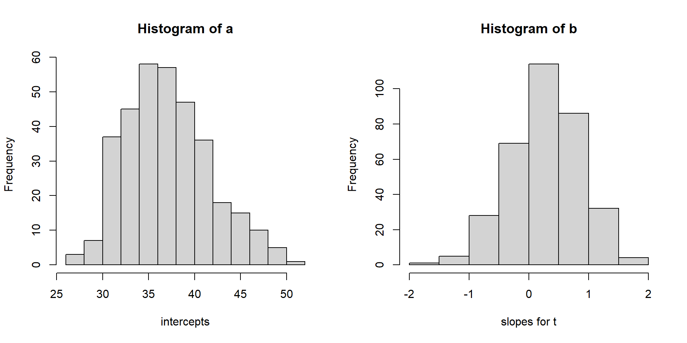Stage two
id age male cardio reject Hc time a b
1 1 25 1 0 1 26 0.0 NA NA
2 1 25 1 0 1 41 0.5 NA NA
3 1 25 1 0 1 42 1.0 NA NA
4 1 25 1 0 1 44 2.0 NA NA
5 1 25 1 0 1 44 3.0 NA NA
6 1 25 1 0 1 45 4.0 NA NA
Call:
lm(formula = a ~ age + male, data = ab)
Residuals:
Min 1Q Median 3Q Max
-12.2780 -3.0676 -0.3379 2.7342 11.9830
Coefficients:
Estimate Std. Error t value Pr(>|t|)
(Intercept) 32.89757 0.25989 126.58 <2e-16 ***
age 0.06970 0.00562 12.40 <2e-16 ***
male1 2.57660 0.13688 18.82 <2e-16 ***
---
Signif. codes: 0 '***' 0.001 '**' 0.01 '*' 0.05 '.' 0.1 ' ' 1
Residual standard error: 4.35 on 4065 degrees of freedom
(9852 observations deleted due to missingness)
Multiple R-squared: 0.1042, Adjusted R-squared: 0.1037
F-statistic: 236.4 on 2 and 4065 DF, p-value: < 2.2e-16 2.5 % 97.5 %
(Intercept) 32.38805063 33.407089
age 0.05867982 0.080715
male1 2.30824792 2.844960
Call:
lm(formula = b ~ age + male, data = ab)
Residuals:
Min 1Q Median 3Q Max
-2.07184 -0.35816 -0.00676 0.39026 1.70238
Coefficients:
Estimate Std. Error t value Pr(>|t|)
(Intercept) 0.3264235 0.0337790 9.663 < 2e-16 ***
age -0.0005096 0.0007304 -0.698 0.485
male1 -0.0710852 0.0177909 -3.996 6.57e-05 ***
---
Signif. codes: 0 '***' 0.001 '**' 0.01 '*' 0.05 '.' 0.1 ' ' 1
Residual standard error: 0.5654 on 4065 degrees of freedom
(9852 observations deleted due to missingness)
Multiple R-squared: 0.003945, Adjusted R-squared: 0.003455
F-statistic: 8.05 on 2 and 4065 DF, p-value: 0.0003241 2.5 % 97.5 %
(Intercept) 0.260198135 0.392648915
age -0.001941644 0.000922405
male1 -0.105965108 -0.036205358The equivalent LMM model should be
Level One: \[Y_{ij} = a_i + b_i \times time_{ij} + \epsilon_{ij},\] where \(\epsilon_{ij} \sim N(0,\sigma^2)\)
Level Two: \[\begin{align} a_i &= \alpha_0 + \alpha_1 \times age_i + \alpha_2 \times male_i + u_i, \\ b_i &= \beta_0 + \beta_1 \times age_i + \beta_2 \times male_i + v_i \end{align}\] where \(\begin{bmatrix} u_i \\ v_i \end{bmatrix} \sim N\left(\begin{bmatrix} 0 \\ 0 \end{bmatrix}, \begin{bmatrix}\sigma_{u}^2 & \rho_{uv}\sigma_u\sigma_v \\ \rho_{uv} \sigma_u\sigma_v & \sigma_v^2 \end{bmatrix}\right)\)
The equivalent linear mixed effect model is: \[Y_{ij} = [\alpha_0 + \alpha_1 \times age_i + \alpha_2 \times male_i + \beta_0 \times time_{ij} +\beta_1 \times age_i \times time_{ij} +\beta_2 \times male_i \times time_{ij} ] + [ u_i + v_i \times time_{ij} + \epsilon_{ij} ],\]
where \(\begin{bmatrix} u_i \\ v_i \end{bmatrix} \sim N\left(\begin{bmatrix} 0 \\ 0 \end{bmatrix}, \begin{bmatrix}\sigma_{u}^2 & \rho_{uv}\sigma_u\sigma_v \\ \rho_{uv} \sigma_u\sigma_v & \sigma_v^2 \end{bmatrix}\right)\) and \(\epsilon_{ij} \sim N(0,\sigma^2)\)
Result comparison
| coefficients.name | coeff.twostage | coeff.LMM |
|---|---|---|
| alpha_0 | 32.8975699323574 | 33.6673837336226 |
| alpha_1 | 0.0696974136630805 | 0.0498091192428494 |
| alpha_2 | 2.576603751364 | 2.22085177214344 |
| beta_0 | 0.326423524902391 | 0.112273787474164 |
| beta_1 | -0.000509619578403424 | 0.00404103830321673 |
| beta_2 | -0.0710852331532519 | 0.0579677566050636 |